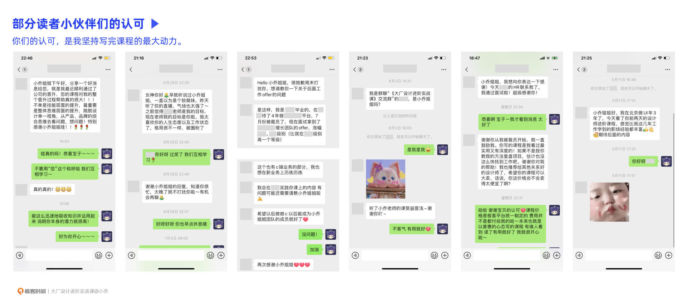
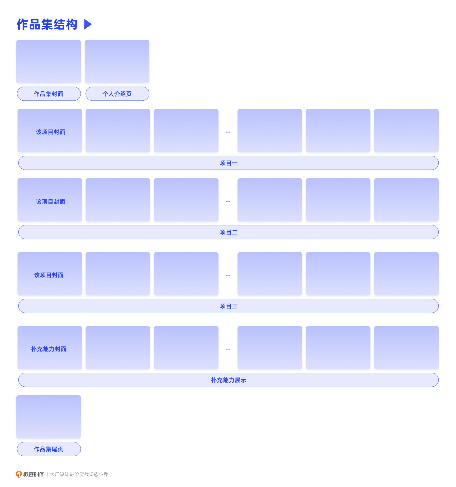
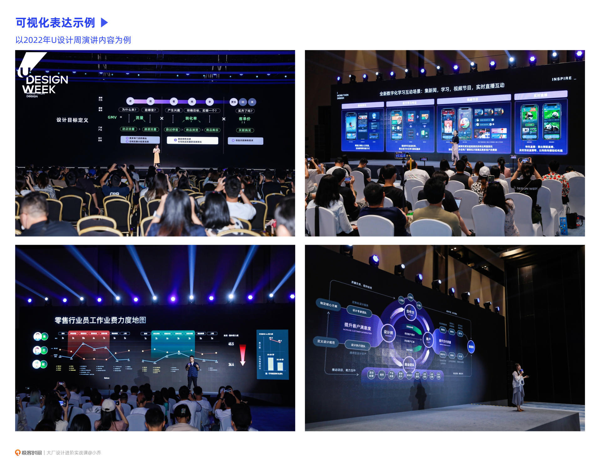
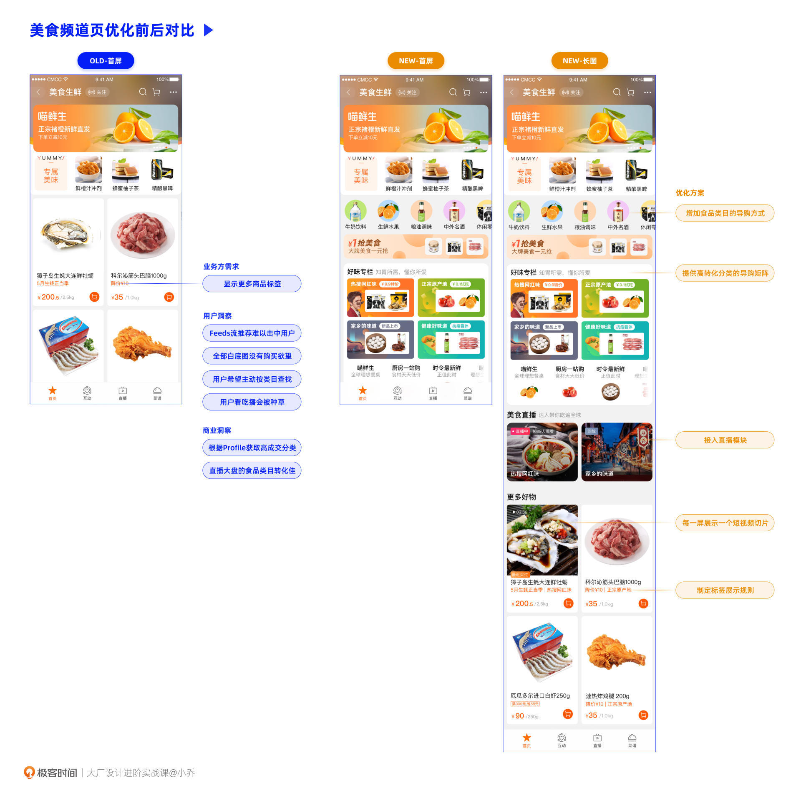
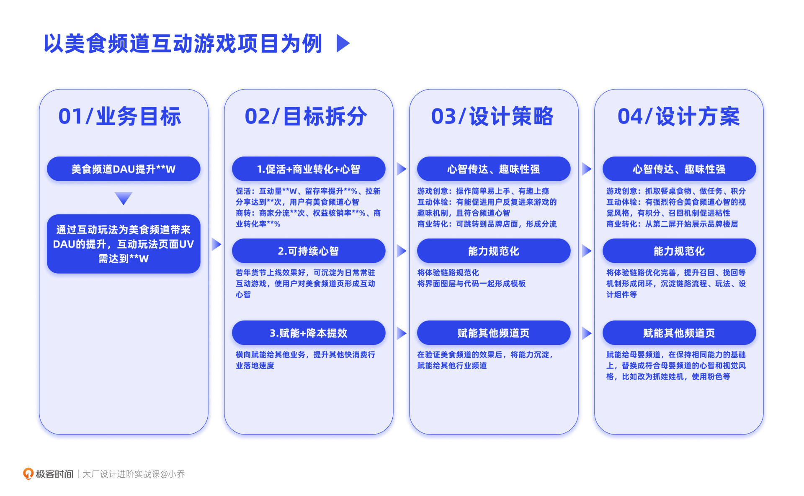
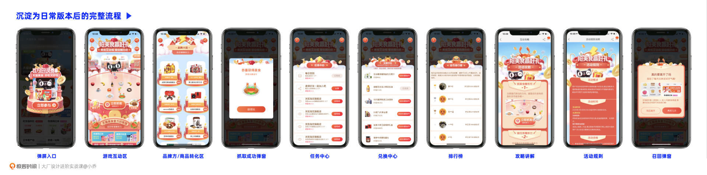
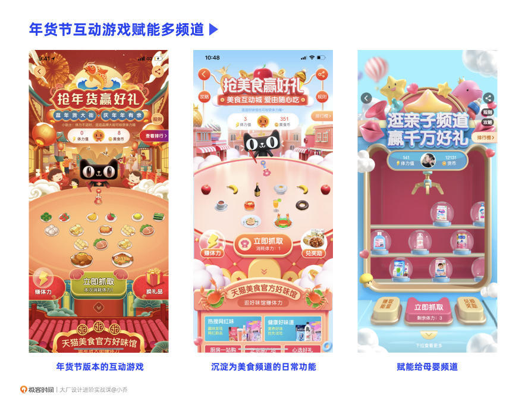
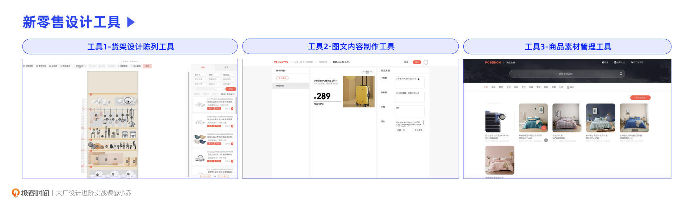
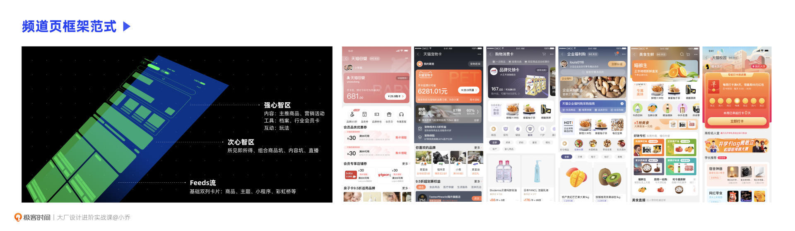
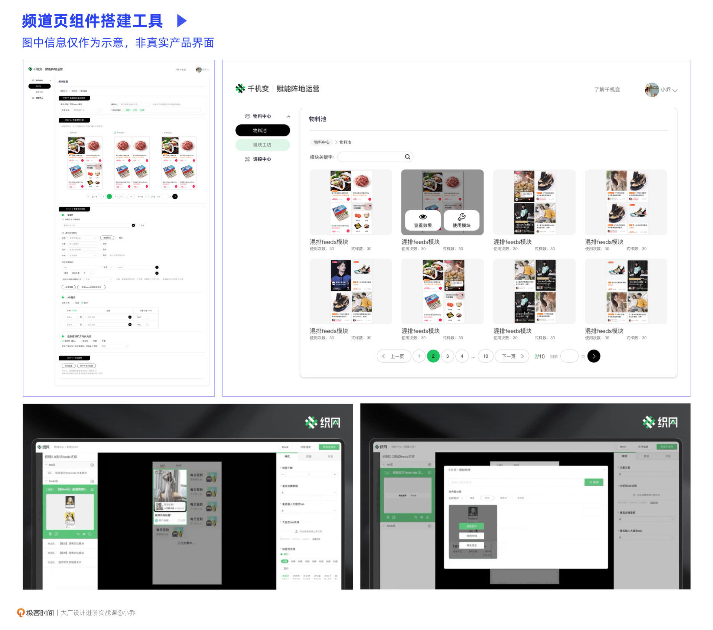

- 00 开篇词 升维思考，是设计师有效成长的第一步.md.html
- 01 业务周期：0-1-10-100-N的发展策略.md.html
- 02 商战模式：如何在商业竞争下突出重围？.md.html
- 03 市场洞察：如何找寻差异化撬动支点？.md.html
- 04 用户洞察：不懂用研的设计师不是好职场人.md.html
- 05 用户画像：是形式主义还是真的有效？.md.html
- 06 用户旅程：挖掘不同用户的核心机会点.md.html
- 07 职场晋升：看懂晋升的“游戏规则”.md.html
- 08 设计价值升级：五层进阶突破成长.md.html
- 09 基础价值 核心三原力：如何将需求转化为设计稿？.md.html
- 10 基础价值 第一性原理：从问题本质解决问题.md.html
- 11 基础价值 设计复盘：只是量化设计结果吗？.md.html
- 12 二级价值 负向网兜：如何全面发现负向问题？.md.html
- 13 二级价值 设计自驱：如何做好项目Owner？.md.html
- 14 二级价值 自驱合作：如何反内卷处理合作关系？.md.html
- 15 三级价值 增长误区：思维惯性陷阱和虚荣数据.md.html
- 16 三级价值 用户增长历程：AARRR是万能的吗？.md.html
- 17 三级价值 产品增长：如何做好产品创新？.md.html
- 18 三级价值 运营增长：如何自驱营销活动和投放？.md.html
- 19 三级价值 品牌增长 抢占心智，赢得人心红利.md.html
- 20 三级价值 增长实操：如何“步步为营”推动落地？.md.html
- 21 四级价值 L型赋能：让T型人才发挥更大价值.md.html
- 22 四级价值 “网状对比”解决共性痛点.md.html
- 23 五级价值 商业画布：设计师可以担任业务方吗？.md.html
- 24 五级价值 共创洞察：如何做好一次完善的workshop？.md.html
- 25 五级价值 领导力觉醒：写给新晋管理者.md.html
- 26 工作选择（上）：2B or 2C设计师？如何规划领域？.md.html
- 27 工作选择（下）：大厂 or 小厂？如何选择赛道？.md.html
- 28 人才地图：认知自我，成为高潜力人才.md.html
- 29 成长历程：如何从设计小白成长为团队负责人？.md.html
- 30 冰山模型：如何成为让面试官欣赏的“面霸”？.md.html
- 31 作品集指导：什么是面试官喜欢的作品集？.md.html
- 用户故事 什么是职场设计师进阶的正确姿势？.md.html
- 结束语 突破自我，成人达己.md.html
- 捐赠
31 作品集指导：什么是面试官喜欢的作品集？
你好，我是小乔。
这节课是我们课程的最后一节正课，恭喜你，坚持学到了最后！相信现在的你，早已实现了突破成长。
其实在写课的过程中，我和极客的编辑遇到过很多困难和突发状况。我的日常工作原本就十分忙碌，只能抽空在周末和节假日写课，全年无休。也有人会以为，一定是有盈利才会有动力，我想，大部分极客的讲师，都不是因为盈利，而是为了贡献自己在行业中的微薄力量或者积累个人影响力。我也希望将自己多年的沉淀分享给你，让更多上进的伙伴少走一些弯路。
那动力来自何方呢？在课程上线后，我收到了不少读者的私信，告诉我他们实现了晋升，还有小伙伴在遭遇裁员后重新找到了工作，都充分运用了我们课程的进阶方法。这对我来说是无比欣慰的，实现了写这套课程的意义，也是我坚持写完课程的动力。

今天这节课，我们就延续上节课关于面试的内容，来聊聊作品集应该怎样做，才能通过简历筛选，获得面试机会，希望能够帮助到每一位读者小伙伴。
准备作品集的前提
做作品集的前提，是有完整的项目可以放。有许多年轻设计师，在企业中还没有负责过完整的项目，就浮躁地想要跳槽，觉得跳槽就能获得涨薪，这其实并不可取。
首先，零散的项目很难制作出高质量的作品集，短暂、高频地跳槽也会让企业觉得不稳定；再来，以目前的行情看，跳槽未必可以涨薪，除非之前的薪资远远低于行业标准。
我更建议你眼光拉长一些，在一家企业真的有所成长之后再跳槽，毕竟职场带给我们的最大报酬是能力和成长本身。如果你在一家企业只待了一年就完整落地了几个硬核项目，也觉得没有更多挑战了，那当然也可以选择跳槽。
如果目前还没有硬核、完整的项目，我建议运用我们之前讲过的五级价值进阶的方法，尽快推进完整项目落地。从基础价值一步步进阶到五级价值的课程和方法，满足从P5晋升到P8的需求，你可以根据跳槽后希望达成的级别，推进相应难度的项目落地。具体每个级别对应的能力要求，可以参考我们之前讲过的晋升课程。
如果你之前已经负责过还可以的项目，但觉得不够完善，那就更简单了。如果它已经完成了0-1，可以再思考一下如何从1-100，继续推进完善。
这里需要强调的是，不要使用假项目或者他人的项目，放入作品集。有经验的面试官都是火眼金睛的，只要瞄一眼作品集，就知道是否造假。有些作品集里套用了很多模型，但是空有其表，根本无法推导出后续的结论。就算侥幸通过了简历筛选，获得了面试机会，面试官针对“STAR模型”提问，你也很难透彻地讲清楚逻辑。所以我们如果想套用一些模型，一定要确保后续的推导是有效的，而不是把模型、方法变成包装的外皮。
在已经有了硬核项目的前提下，我们再来看看如何制作出高质量的作品集。
如何制作高质量作品集
通过上节课我们可以得知，作品集和简历是我们获得面试机会的敲门砖。作品集的展示目标，是将“冰山模型”水面以上的部分充分表达出来，如果可以的话，最好能把水面以下的第一层综合能力也体现出来。总结来说，作品集就是充分体现我们的核心三原力，表达我们是一位合格职场设计师的媒介。
作品集结构
我们先来看看一个高质量的作品集，应该是怎样的结构。
首先，作品集会有封面页。未必需要设计得很复杂，可以很简约，但需要体现出你的审美水平。许多设计师并不在意封面页，但封面页是他人对这份作品集的第一印象。有心的设计师，还会在封面上做一些趣味设计，比如把它设计成一个档案封面，或者设计成一封快递等等。
第二页建议放个人介绍页。你可以概括一下自己的经历、优势，迅速在面试官的头脑中侵入一些关于你的“职业标签”。
在进入主体项目介绍之前，一定要有一个目录页，可以设计得可视化一些。当面试官让你选一个项目讲解时，你可以主动先对着目录，讲一下这几个项目的侧重点、你担任的角色，看看对方对哪个项目感兴趣。
目录页后面，就是我们的几个具体项目了，我们会在下文重点讲解。每个项目最好都有一个封面页，同样可以把项目重点、你在项目中担任的角色都标注上去。
当主体的几个项目完成后，如果你还有其他的技能或者经历，比如空间设计、工业产品设计、建筑设计、3D、摄影、插画等等，那可以将这些补充技能整理在一起，形成加分项。
作品集很容易体现“冰山模型”水面以上的部分，那又该如何体现冰山以下的综合能力呢？我们可以在个人介绍页、每个项目的封面图上体现，标注自己在这个项目中的角色。除此以外，还可以在具体项目中，集中有一页表现自己推进项目的过程。这样就可以体现出，我们是作为owner带着其他同学一起推进的项目，还是独立完成了整个项目等等。

主体项目的完整度
有了完整的框架，我们就要注入作品集的灵魂了，那就是高质量的项目内容。通过项目内容，让面试官感受到我们的专业能力、多元能力和高潜力特质。
作品集中的项目，不在于量，在于质。如果每个项目都是完整的，那仅需要放2-3个项目即可。什么是完整度高的项目呢？就是将需求分析、商业与用户的机会点、设计策略拆解、设计解法推导、上线测试效果、最终方案优化、复盘沉淀经验等内容全面包含。简单来说，就是我们讲过的四步拆解法和设计复盘。
面试官最不想看到的作品集，就是一堆视觉稿贴满了一整个文档，却没有任何逻辑推导，也没有任何结果复盘。即便审美和技法不错，也会毫不犹豫地淘汰。因为这样的候选人，首先对自己的认知就存在偏差，把自己定义成美工，而不是设计师，招聘进来会有很大的培养成本；再来，逻辑思考能力是必备条件，仅有手活，在人才密度较高的环境中是没有竞争力的。我们曾经在领导力一课中讲过，从管理团队的角度来说，选拔大于培养。
之前有一些被大厂裁员的设计小伙伴发了作品集给我，想让我帮忙看看。我可以看到扎实的软件技法能力和不错的审美，但这样的水平在当前是无法进入大厂的。也许你会好奇，为什么之前可以进大厂，现在却被淘汰了呢？因为行业要求每一年都在提升，如果跟不上行业和企业的要求，自然是会遭遇淘汰的。尤其在行业紧缩的情况下，各大厂、各部门的HC封锁，许多部门为了提升人才密度，只能先把不合格的员工裁员，空出HC之后再招聘优秀的人才。
大厂不缺手活好的设计师，我们能否得到面试官的青睐，在于我们对比其他应聘者来说是否有优势。如果我们希望自己的作品集有竞争力，就务必要确保项目的完整性，这样才能体现出设计思维和推导逻辑链。精美的设计稿，只是每个项目推导过程中的一个环节而已。
主体项目的选择
如果我们要选择3个项目放入作品集，到底该如何选择呢？
如果你已经有了明确的跳槽目标，就可以一定程度迎合对方的需求。比如，你想去面试电商业务，那作品集中最好有一个项目是电商项目；如果你想应聘海外业务，那最好有一个项目是出海业务，或者有相关经历可以体现出你的英文水平、对海外市场的理解。以我自己为例，我面试不同公司，准备的是不同的作品集，大部分内容一致，但会替换部分项目，更符合面试的业务。
如果你没有明确的跳槽目标，只是想做一个通用的作品集，用一份作品集去投递多家公司，那建议选择3个侧重点不同的项目，以展示你不同方面的能力和拓展性。比如，一个项目是完整的营销活动，一个项目是自驱推动的C端改版，还有一个项目是2B的中后台业务。再比如，一个项目体现自驱推动的三级价值，一个项目体现横向赋能的四级价值，还有一个项目体现你作为业务owner推进项目的能力，体现五级价值，这就是我自己做作品集的项目选择。
可视化和可读性
除了挑选合适的项目，确保每个项目的完整度以外，作品集整体也需要具备可观赏性，毕竟我们是设计师。不要写大段的文字描述，尽量用可视化的方式表达，可以参考我们这套课程中的配图，或者一些设计行业大会中的PPT，我挑选了2022年U设计周的一些公开照片作为示例。

可视化、抽象总结能力，都是设计师的基本表达能力。如果候选人连自己的作品集都做不好，那面试官也不敢期待TA做好项目的能力。
在作品集制作完毕后，建议导出pdf或其他容易打开的文档进行投递。不建议使用需要翻墙的网站链接，更不建议打包成一个文件夹压缩包。许多面试官看到这样的简历，会选择直接忽略，它甚至没有被打开的机会。我们身为设计师，需要具备极强的同理心，试想一下，如果你是一位着急招聘到优秀人才，每天要筛选大量简历和作品集的HR或面试官，看到可读性差的作品集是怎样的心理感受呢？
总结来说，制作高质量作品集的原则，是在基础能力达标的情况下，充分展示自己对比其他应聘者的竞争优势。这些优势，可以参考我们上节课讲过的“冰山模型”，如果能在每个层级都充分渗透你的能力，相信你一定是通过面试的人才。
具体案例演示
我们在之前的课程中，已有大量的案例演示机会点挖掘、目标拆分、设计推导、复盘结果的过程。
比如，针对线性的单一项目，可以参考第一性原理课程中讲过的频道页改版项目：

针对从0-1搭建，推进1-100的多版本迭代，100-N赋能给更多场景的案例，可以参考核心三原力中营销活动的项目：



针对从点、线到面的四级价值，可以参考网状对比一课中的新零售工具案例和组件搭建器案例。



相信充分吸收这些知识的你，一定可以做出惊艳面试官的作品集。
今日小结
今天，我们一起探讨了能让面试官欣赏的作品集是怎样的，本质在于突显我们对比其他应聘者的优势。我们也要尽量在作品集中，将“冰山模型”中的优秀特质表现出来。
在制作作品集之前，首先要确保自己有完整的项目，通常准备3个项目即可。如果目前还没有完整的项目，我更建议先用几个月的时间，推动落地一个完整项目。作品集中，至少需要有一个非常站得住脚的项目，可以充分体现我们的能力。
在挑选项目时，如果已经有心仪的目标企业，可以针对要应聘的岗位适当迎合，挑选1个相关的项目放入作品集。如果没有目标企业，想用一份通用的作品集海投多家企业，那可以选择3个不同侧重的项目，突显不同的行业经验和能力跨度。
身为设计师，我们的作品集本身需要具备可观赏性，可以可视化的部分就尽量不要用文字描述。
最后，我们依然要强调的是，高质量的作品集来自于实打实的能力。成功没有捷径，空虚的海绵一定经不起挤压和考验。我们要让自己的能力更加坚实，也应当共同抵制造假的作品集，让良币驱逐劣币。
互动时刻
回顾你过往的经历，有没有觉得还不错，但还能进一步完善的项目呢？未来要做作品集的话，你想到可以放的3个项目了吗？
欢迎把你的经历和思考在留言区分享出来，与我和其他同学一起探讨。我们建了一个读者交流群，欢迎你的加入！如果你觉得有所收获，也欢迎把文章分享给你的朋友一起学习。
感谢你的勤奋认真，让我们在下一节课，结束语中相见。
© 2019 - 2023 Liangliang Lee. Powered by gin and hexo-theme-book.